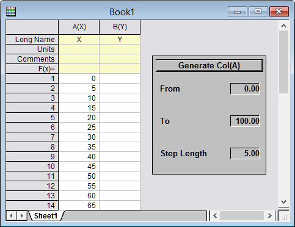
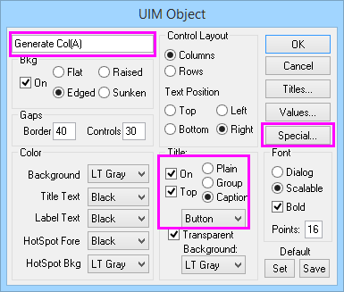
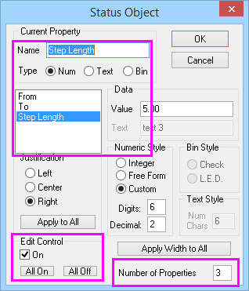

FAQ-689 Was ist das User Interface Module (UIM), und wie bearbeite und programmiere ich ein UIM-Objekt?
UIM-editing-programming
Letztes Update: 03.01.2019
 |
SEHR WICHTIGE HINWEISE!!!
UIM ist ein sehr altes Hilfsmittel, und Origin verfügt jetzt über leistungsstärkere und flexiblere Hilfsmittel, um Ihre benutzerdefinierten Dialoge und vollständigen Routinen zu erstellen. Seit Origin 2018b verbergen wir die UIM-Toolbox im Editiermodus. In der aktuellen Version
- können Sie eine Reihe von Schaltflächen oder Symbolleisten erstellen, um benutzerdefinierte LabTalk-Skripte auszuführen. Bitte lesen Sie Benutzerdefinierte Symbolleisten und Symbolleistenschaltflächen, um ausführlichere Informationen zu erhalten.
- Sie können zum Erzeugen eines benutzerdefinierten Dialogs die automatische Methode des Dialogs X-Funktion erstellen verwenden. Weitere Informationen hierzu finden Sie im Dokument zum X-Function Builder.
- Sollten Sie mehr Bedienelemente brauchen, bietet OriginC eine Vielfalt von Methoden zum Umgang mit komplexen Programmieraufgaben. Mehrere Hilfsmittel, einschließlich GetN Macros, GetNBox, externe DLL und sogar Python, können eingesetzt werden. Weitere Informationen finden Sie im Dokument zu Origin C.
- Zuletzt (angefangen bei Origin 2017) haben wir die Unterstützung für Dialoge mit HTML und JavaScript ergänzt, wodurch eine höhere Flexibilität beim Erstellen von Dialogen, die mit Origin zusammenarbeiten, entsteht. Bitte lesen Sie Origin C HTML-Dialog mit JavaScript-Unterstützung, um weitere Informationen zu erhalten.
Wenn Sie noch immer UIM verwenden möchten, können Sie die Systemvariable @UIM auf 1 setzen, um die UIM-Toolbox im Editiermodus aufzurufen und auf dieser Seite weiterlesen, wie man sie verwendet.
-
- Wählen Sie Einstellungen: Systemvariablen im Menü.
- Geben Sie im Dialog Systemvariablen festlegen @UIM in Variable ein und setzen Sie den Wert auf 1.
|
Übersicht
Das User Interface Module (UIM) besteht aus einer Reihe von Objekten, die zum Entwickeln von benutzerdefinierten Hilfsmitteln verwendet werden können. Diese 14 Objekte werden im Allgemeinen zu einer Fenstervorlage hinzugefügt und können so programmiert werden, dass sie LabTalk-Skript ausführen. Die verschiedenen Objekttypen -- Bitmap-Schaltflächen, Kontrollkästchenelemente, Optionsschaltflächen etc. -- können modifiziert und programmiert werden. Mit ihnen ist es möglich, eine intuitive Oberfläche für Ihre benutzerdefinierten Routinen zu erstellen.
Das UIM war lange Zeit eine Funktion von OriginPro. Ab Origin 2015 SR1 wird es Teil der Standardversion von Origin sein. Besuchen Sie www.originlab.com, um die Dokumentation des UIM im PDF-Format herunterzuladen.
-

- Um ein UIM-Objekt zu einer Fenstervorlage hinzuzufügen:
- Öffnen Sie ein Origin-Fenster (Arbeitsmappe, Matrixmappe, Diagramm oder Layout), das Sie beabsichtigen als Vorlage für Ihre Anwendung zu verwenden.
- Klicken Sie im Menü auf Bearbeiten: Schaltflächen bearbeiten, um den Modus Schaltflächen bearbeiten zu aktivieren (ein Häkchen neben Schaltflächen bearbeiten zeigt an, dass Sie sich im Modus Schaltflächen bearbeiten befinden).
- Klicken Sie auf das gewünschte Element in der Symbolleiste UIM.
- Ziehen Sie an der Stelle, bei der Sie das Objekt einfügen möchten, mit Ihrer Maus ein Rechteck auf. Es wird ein UIM-Objekt hinzugefügt.
- Während Sie sich im Modus Schaltflächen bearbeiten befinden, können Sie das Objekt auswählen und es ggf. verschieben oder in der Größe verändern.
- Um das UIM-Objekt umzubenennen:
- Klicken Sie im Modus Schaltflächen bearbeiten klicken Sie mit der rechten Maustaste auf das Objekt und wählen Sie Programmablauf.
- Bearbeiten Sie Objektname und klicken Sie auf OK, um den Dialog zu schließen.
- Um das UIM-Objekt benutzerdefiniert anzupassen:
- Verwenden Sie den Dialog UIM-Objekt, um Elemente, Layouts und Hintergrund benutzerdefiniert anzupassen. Klicken Sie auf die Schaltflächen Titel, Werte und Speziell für weitere Optionen. Diese Schaltflächen öffnen Dialoge für verschiedene UIM-Objekttypen.
- Um den Dialog UIM-Objekt zu öffnen, klicken Sie doppelt auf Schaltflächen bearbeiten auf dem Objekt. Wenn Sie sich nicht im Modus Schaltflächen bearbeiten befinden, drücken Sie die Strg-Taste und klicken Sie doppelt auf das Objekt.
- Um Code hinter dem Objekt hinzuzufügen:
- Verwenden Sie den Dialog Programmablauf, um hinter dem Objekt auszuführendes Skript hinzuzufügen.
- Zum Öffnen des Dialogs Programmablauf: Klicken Sie im Modus Schaltflächen bearbeiten mit der rechten Maustaste auf das Objekt und wählen Sie Programmablauf. Wenn Sie sich nicht im Modus Schaltflächen bearbeiten befinden, drücken Sie die Alt-Taste und klicken Sie doppelt auf das Objekt.
- Verwenden Sie die Notation ObjectName.ControlName, um auf die Elemente des UIM-Objekts via Skript zuzugreifen. Wenn es Leerstellen im Elementnamen gibt, sollten Sie diese beim Aufrufen Ihres Elements im Code kürzen.
| Hinweis: Beim Zugriff auf die Elemente des aktuellen UIM-Objekts selbst können Sie this.ControlName verwenden. |
Beispiel
In diesem Beispiel erstellen wir ein einfaches UIM-Objekt, das die Werte Von, Bis und Stufenlänge vom Anwender nimmt und dann das LabTalk-Skript verwendet, um Spalte A mit Daten zu füllen, wenn der Anwender auf eine Schaltfläche Col(A) erzeugen klickt.
-
- 
- Wählen Sie Bearbeiten: Schaltflächen bearbeiten. Die Symbolleiste UIM wird angezeigt.
- Klicken Sie auf die Schaltfläche Status
 .
.
- Ziehen Sie ein Rechteck auf dem leeren Bereich einer Arbeitsmappe auf. Es wird ein Objekt mit dem Beschriftung STATUS zu dem Arbeitsmappenfenster hinzugefügt.
- Klicken Sie zum Öffnen des Dialogs UIM-Objekt doppelt auf das Objekt.
- Bearbeiten Sie das Objekt wie im Bild unten gezeigt.
- 
- Klicken Sie auf die Schaltfläche Speziell und öffnen Sie den Dialog Status Objekt.
- Duplizieren Sie die Einstellungen wie im Bild unten gezeigt. Geben Sie 0,00 für Von ein; geben Sie 100,00 für Bis ein; geben Sie 5,00 für Stufenlänge ein.
- 
- Klicken Sie zweimal auf OK, um den Dialog Status Objekt und den Dialog UIM-Objekt zu schließen.
- Klicken Sie mit der rechten Maustaste auf das STATUS-Objekt und wählen Sie Programmablauf.
- Geben Sie im Skriptfeld Folgendes ein:
-
col(A) = data(this.From, this.To, this.StepLength);
- Wählen Sie Mausklick in der Auswahlliste Kriterien für Skriptausführung.
- Klicken Sie auf OK, um den Dialog zu schließen.
- Wählen Sie im Menü Bearbeiten: Schaltflächen bearbeiten um den Bearbeitungsmodus zu verlassen.
- Klicken Sie auf die Schaltfläche Col(A) erzeugen, um die Spalte col(A) mit Daten zu füllen.
Schlüsselwörter:UIM, User Interface Module, benutzerdefinierte Routine, benutzerdefiniertes Hilfsmittel, benutzerdefinierte Anwendung, GUI, LabTalk